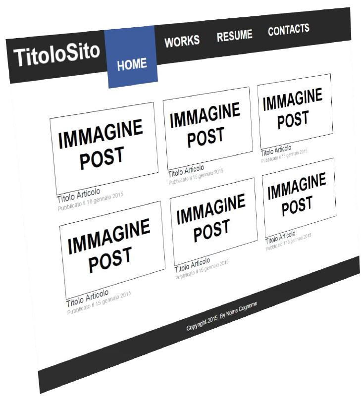
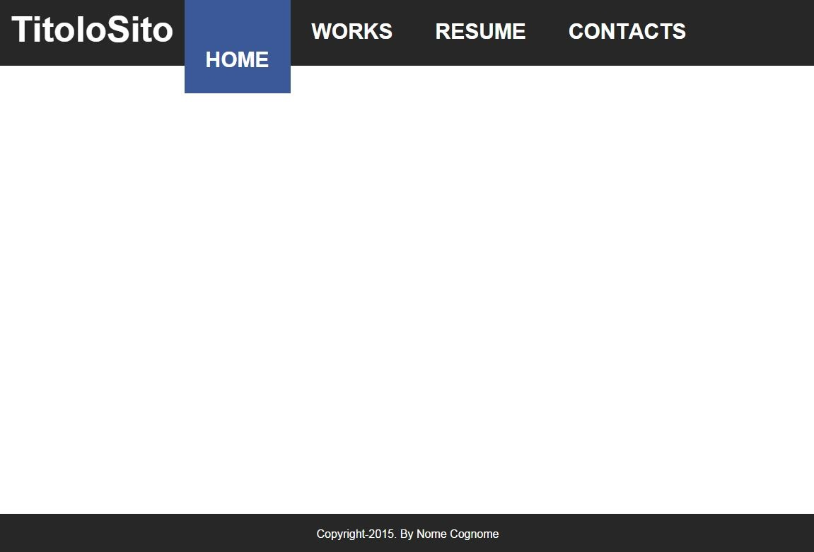
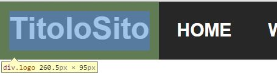
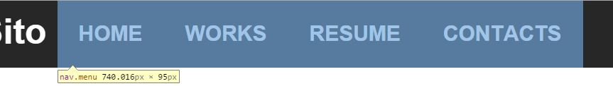
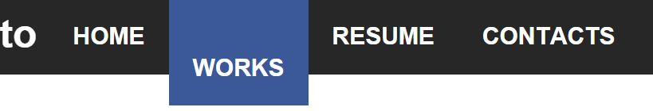
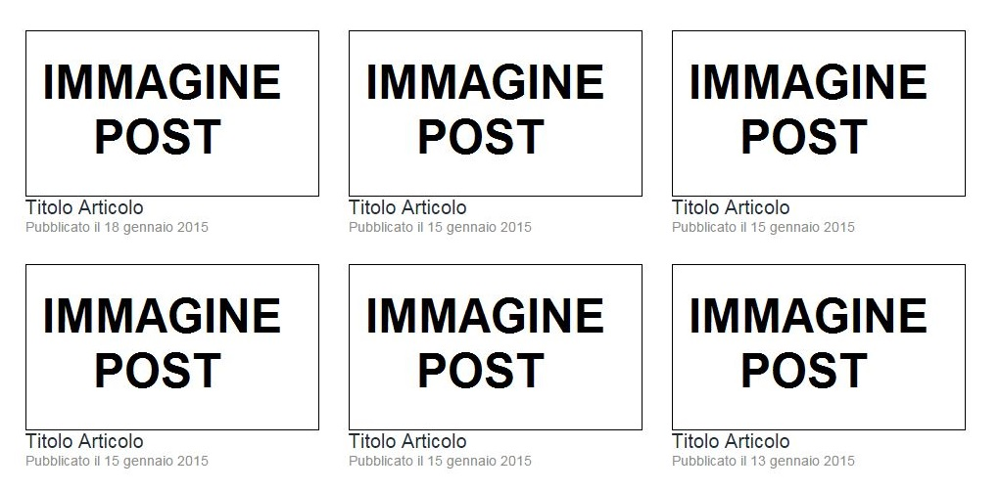
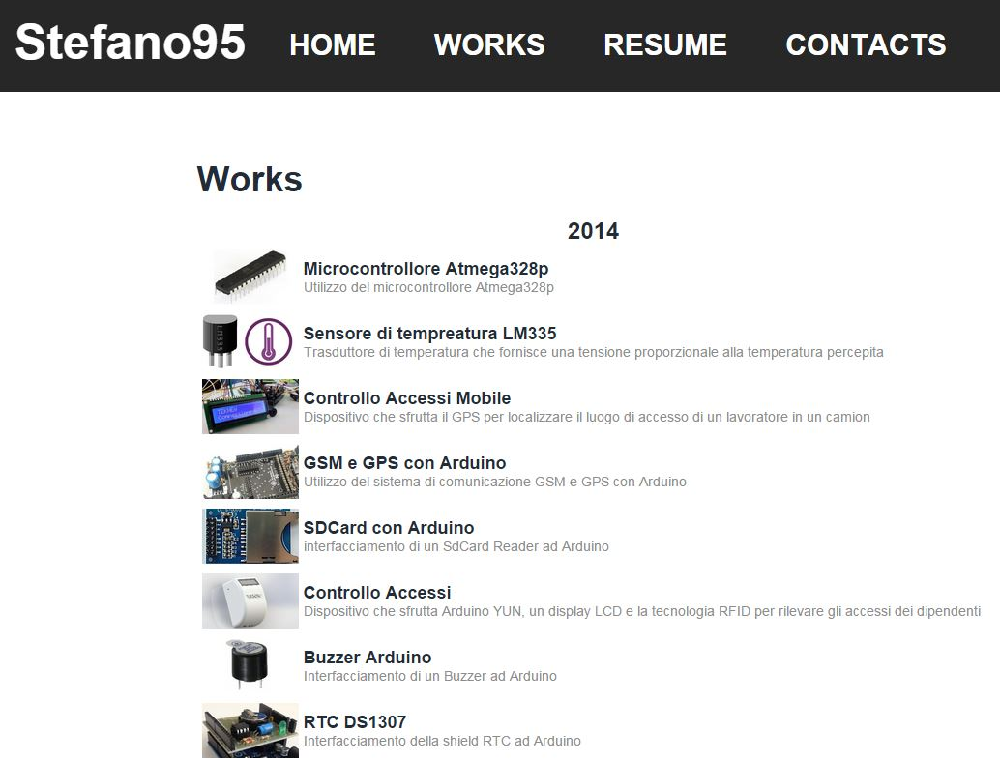
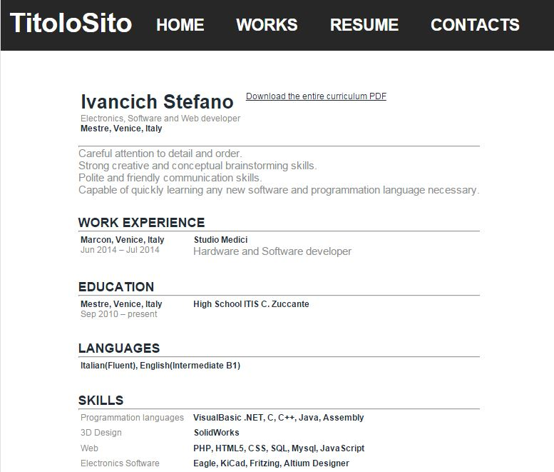
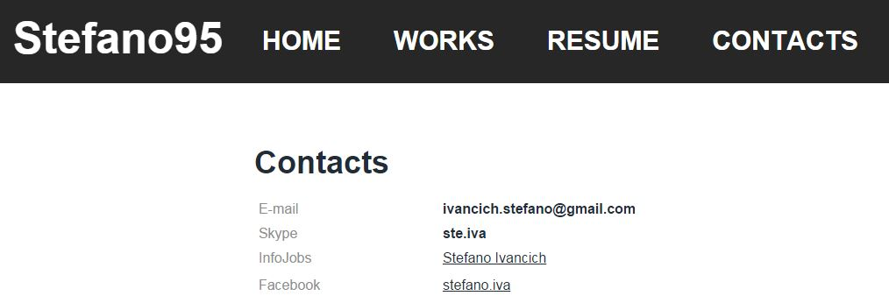

La pagina di base, ovvero quella che rimane la stessa su tutte le pagine del sito, è composta di 3 sezioni: Header, Main section e Footer.

<body>
<div class="pagina">
<header class="top_header"></header>
<section class="main"></section>
<footer class="footer"></footer>
</div>
</body>
*{ /*Tutto*/
margin:0px; /*Lo spazio tra un paragrafo, testo, img e altro è di 0px(-top,bottom...)*/
padding:0px; /*Mette 0 pixel tra il testo e il bordo in ogni lato.(-top,-bottom...)*/
}
body{
width:100%; /*La larghezza del body è del 100% della larghezza del browser*/
display:-webkit-box; /*Permette di sistemare in maniera flessibile i box presenti all’interno*/
display:-moz-box; /*Stesso comando precedente ma per firefox*/
-webkit-box-pack:center; /*Mette tutto il contenuto del body al centro della pagina*/
-moz-box-pack:center; /*Stesso comando precedente ma per firefox*/
background:#272727; /*Sfondo della pagina grigio*/
}
header, section, footer{
display:block; /*In pratica li mette uno sotto l'altro, se no potrebbero essere nella stessa riga*/
}
.pagina{
display:-webkit-box; /*Permette di sistemare in maniera flessibile i box presenti all’interno*/
-webkit-box-orient:vertical; /*Gli elementi del div si allineano verticalmente*/
-webkit-box-flex: 1; /*1=vuol dire flessibile*/
display:-moz-box; /*Stesso comando precedente ma per firefox*/
-moz-box-orient:vertical;/*Stesso comando precedente ma per firefox*/
-moz-box-flex: 1; /*Stesso comando precedente ma per firefox*/
}
L’header, ovvero la sezione di pagina che compare in alto è di colore grigio scuro e contiene al suo interno il Logo del sito e il menu contenente il link alle varie pagine, entrambi sono posti nella stessa riga.
<header class="top_header"> <div class="logo"></div> <nav class="menu"></nav> </header>
.top_header{
display:-webkit-box; /*Permette di sistemare in maniera flessibile i box presenti all’interno*/
-webkit-box-orient:horizontal; /*Gli elementi del div si allineano orizontalmente*/
display:-moz-box; /*Stesso comando precedente ma per firefox*/
-moz-box-orient:horizontal;/*Stesso comando precedente ma per firefox*/
-webkit-box-pack:start;/*Mette tutto il contenuto verso la destra della pagina*/
-moz-box-pack:start; /*Stesso comando precedente ma per firefox*/
text-decoration: none; /*Per non avere link sottolineati*/
color:white; /*Colore del testo bianco*/
font:bold 30px Arial;
height: 95px;
background:#272727; /*Sfondo della pagina grigio*/
}
.top_header a{
text-decoration: none; /*Per non avere link sottolineati*/
color:white; /*Colore del testo bianco*/
}
Questo è composto da un link in font “bold 50px Arial”, ma è possibile metterci anche un immagine.

<div class="logo"> <a href="#">TitoloSito</a> </div>
.logo{
margin:0;
font:bold 50px Arial;
padding:15px;
}
Il navigation menu è composto da una lista contenente diversi link alle pagine. Quando si passa sopra col mouse ad un elemento della lista, questo si “abbassa” e diventa di colore blu.
 
<nav class="menu">
<ul>
<li><a href="#">HOME</a></li>
<li><a href="#">WORKS</a></li>
<li><a href="#">RESUME</a></li>
<li><a href="#">CONTACTS</a></li>
</ul>
</nav>
.menu{
}
.menu ul{
list-style: none;
margin:0px;
}
.menu ul li{
float:left;
vertical-align: middle;
padding:30px;
transition: padding 0.2s linear; /*L'effetto di cambiamento di padding dura 0.2s*/
}
.menu ul li:hover { /*Quando si passa sopra col mouse*/
position: relative;
background:#3B5998; /*Sfondo blu*/
padding-top:70px; /*Padding superiore aumenta a 70px*/
}
Il footer è quella parte di pagina di colore grigio scure collocata alla fine della pagina, e contiene il nome dell’autore del sito.
<footer class="footer"> Copyright-2015. By Nome Cognome </footer>
.footer{
color:white;
text-align:center; /*Tutto il testo viene allineato al centro*/
padding:20px; /*20 pixel tra il testo e il bordo in ogni lato.*/
font:16px Arial;
background:#272727; /*Sfondo della pagina grigio*/
}
La main section, di sfondo bianco, possiede il testo e diversi contenuti scelti dall’utente. Al suo interno ci sono diversi tipi di pagina:
<section class="main"> </section>
.main{
display:-webkit-box; /*Permette di sistemare in maniera flessibile i box presenti all’interno*/
display:-moz-box; /*Stesso comando precedente ma per firefox*/
-webkit-box-pack:center; /*Mette tutto il contenuto del body al centro della pagina*/
-moz-box-pack:center; /*Stesso comando precedente ma per firefox */
-webkit-box-flex: 1; /*1=vuol dire flessibile*/
-moz-box-flex: 1; /*Stesso comando precedente ma per firefox*/
width:100%; /*La larghezza del è del 100% larghezza del browser*/
background: #ffffff; /*Sfondo bianco*/
padding-top:70px;
padding-bottom:50px;
}
La pagina HOME contiene una lista con immagini di grandezza 300x170px degli articoli, con tanto di titolo dell’articolo e data.

<div class="index">
<div class="scheda">
<a href="#"><img src="#" width="300"/></a>
<a href="#"><h1>Titolo articolo</h1></a>
<h2>Pubblicato il 15 gennaio 2015</h2>
</div>
</div>
.index{
background: #ffffff; /*Sfondo bianco*/
max-width:1000px;
}
.scheda{
float:left; /*Ogni scheda va a capo quando non ci sta nel browser*/
min-width:300px;
max-width:300px;
padding:15px;
}
.scheda img{
opacity: 1;
}
.scheda img:hover{ /*Quando si passa col mouse sopra all’immagine*/
opacity: 0.3;
}
.scheda h1{
font:20px Arial;
color: #222c36; /*Grigio scurissimo*/
}
.scheda h1:hover{
font:bold 20px Arial;
color:#3B5998; /*Sfondo blu*/
}
.scheda h2{
font:14px Arial;
color:#8d8d8d; /*Grigio chiaro*/
}
.scheda a{
text-decoration: none; /*Per non avere link sottolineati*/
}
Pagina in cui appare l’articolo con il suo contenuto.
<div class="post">
<article>
<header>
<hgroup>
<h1>Titolo articolo</h1>
<h3>Pubblicato il 15 gennaio 2015</h3>
</hgroup>
</header>
CONTENUTO
</article>
</div>
.post{
-webkit-box-flex: 1; /*1=vuol dire flessibile*/
-moz-box-flex: 1; /*Stesso comando precedente ma per firefox*/
max-width:1000px;
background:white;
font:16px Arial;
color: #222c36; /*Grigio scurissimo*/
}
.post ul{
list-style-type:decimal;
margin-left:20px; /*padding di 20 px quindi sposto di 20px*/
}
.post ul ul{
list-style-type:disc;
}
.post ul ul ul{
list-style-type:square;
}
.post hr{
background:rgba(0,0,0,0.4);
height:1;
}
.post a{
color:black;
font:bold 16px Arial;
}
.post a:hover{
color:rgba(0,0,0,0.4);
font:bold 18px Arial;
}
.post h1{
font:bold 36px Arial;
}
.post h2{
font:bold 24px Arial;
}
.post h3{
font:20px Arial;
color:#8d8d8d; /*Grigio chiaro*/
}
.post code {
color:blue;
margin-left:20px;
font:italic 18px Arial;
}
.post article{
border-bottom:1px solid rgba(0,0,0,0.4);
margin-bottom:20px;
}
.post header{
border-bottom:1px solid rgba(0,0,0,0.4);
margin-bottom:20px;
}
Pagina dove appare una lista degli articoli con tanto di breve descrizione. Esempio:

<div class="works">
<h1>Works</h1>
<div class="works-horizontal">
<a href="#"><img src="#" width="100" /></a>
<div class="works-vertical">
<a href="#">
<h2>Titolo Articolo</h2>
</a>
<h3>DESCRIZIONE</h3>
</div>
</div>
</div>
.works{
}
.works div{
padding: 5px;/*Mette 5 pixel tra il testo e il bordo in ogni lato.*/
}
.works-horizontal{
display:-webkit-box; /*Permette di sistemare in maniera flessibile i box presenti all’interno*/
-webkit-box-orient:horizontal; /*Gli elementi del div si allineano orizontalmente*/
display:-moz-box; /*Stesso comando precedente ma per firefox*/
-moz-box-orient:horizontal; /*Stesso comando precedente ma per firefox*/
}
.works-vertical{
display:-webkit-box; /*Permette di sistemare in maniera flessibile i box presenti all’interno*/
display:-moz-box; /*Stesso comando precedente ma per firefox*/
-webkit-box-orient:vertical; /*Gli elementi del div si allineano verticalmente*/
-webkit-box-pack:center; /*Mette tutto il contenuto del body al centro della pagina*/
-moz-box-pack:center; /*Stesso comando precedente ma per firefox*/
-moz-box-orient:vertical; /*Stesso comando precedente ma per firefox*/
}
.works img{
opacity: 1;
}
.works img:hover{
opacity: 0.3;
}
.works a{
text-decoration: none; /*Per non avere link sottolineati*/
}
.works h1{
font:bold 36px Arial;
color: #222c36; /*Grigio scurissimo*/
}
.works h2{
font:bold 18px Arial;
color: #222c36; /*Grigio scurissimo*/
}
.works h2:hover{
font:bold 18px Arial;
color:#3B5998; /*Sfondo blu*/
}
.works h3{
font:14px Arial;
color:#8d8d8d; /*Grigio chiaro*/
}
.works h4{
font:bold 24px Arial;
color: #222c36; /*Grigio scurissimo*/
}
Pagina dedicata al curriculum. Esempio:

<div class="resume">
<div class="resume-horizontal">
<div>
<h1>Ivancich Stefano</h1>
<h4>Electronics, Software and Web developer</h4>
Mestre, Venice, Italy
</div>
<div>
<br>
<a href="http://stefan95.altervista.org../uploads/2015/08/IvancichStefanoCV.pdf">Download the entire curriculum in PDF</a>
</div>
</div>
<br>
<hr>
<div>
<h3>Careful attention to detail and order.</h3>
<h3>Strong creative and conceptual brainstorming skills.</h3>
<h3>Polite and friendly communication skills.</h3>
<h3>Capable of quickly learning any new software and programmation language necessary.</h3>
</div>
<br><br>
<h2>WORK EXPERIENCE</h2>
<hr>
<div class="resume-horizontal">
<div>
Marcon, Venice, Italy
<h4>Jun 2014 - Jul 2014</h4>
</div>
<div>
Studio Medici
<h3>Hardware and Software developer</h3>
</div>
</div>
<br><br>
<h2>EDUCATION</h2>
<hr>
<div class="resume-horizontal">
<div>
Mestre, Venice, Italy
<h4>Sep 2010 - Jun 2015</h4>
</div>
<div>
High School ITIS C. Zuccante
</div>
</div>
<br><br>
<h2>LANGUAGES</h2>
<hr>
<div class="resume-horizontal">
<div>Italian(Fluent), English(Intermediate B1)</div>
</div>
<br><br>
<h2>SKILLS</h2>
<hr>
<div class="resume-horizontal">
<div><h4>Programmation languages</h4></div>
<div>VisualBasic .NET, C/C++, Java, Assembly</div>
</div>
<div class="resume-horizontal">
<div><h4>3D Design</h4></div>
<div>SolidWorks</div>
</div>
<div class="resume-horizontal">
<div><h4>Web</h4></div>
<div>HTML5, CSS, Bootstrap, PHP, SQL, Mysql, Wordpress</div>
</div>
<div class="resume-horizontal">
<div><h4>Electronics Software</h4></div>
<div>Eagle, KiCad, Fritzing, Altium Designer</div>
</div>
</div>
.resume{
display:-webkit-box; /*Permette di sistemare in maniera flessibile i box presenti all’interno*/
-webkit-box-orient:vertical; /*Gli elementi del div si allineano verticalmente*/
display:-moz-box; /*Stesso comando precedente ma per firefox*/
-moz-box-orient:vertical;/*Stesso comando precedente ma per firefox*/
background:white;
}
.resume *{
font:bold 16px Arial;
color: #222c36; /*Grigio scurissimo*/
}
.resume a{
font:16px Arial;
color: #222c36; /*Grigio scurissimo*/
}
.resume a:hover{
font:bold 18px Arial;
color:#8d8d8d; /*Grigio chiaro*/
}
.resume h1{
font:bold 36px Arial;
color: #222c36; /*Grigio scurissimo*/
}
.resume h2{
font:bold 24px Arial;
color: #222c36; /*Grigio scurissimo*/
}
.resume h3{
font:20px Arial;
color:#8d8d8d; /*Grigio chiaro*/
}
.resume h4{
font:16px Arial;
color:#8d8d8d; /*Grigio chiaro*/
}
.resume-horizontal{
display:-webkit-box; /*Permette di sistemare in maniera flessibile i box presenti all’interno*/
-webkit-box-orient:horizontal; /*Gli elementi del div si allineano orizontalmente*/
display:-moz-box; /*Stesso comando precedente ma per firefox*/
-moz-box-orient:horizontal; /*Stesso comando precedente ma per browser firefox*/
}
.resume-horizontal div{
padding: 5px; /*Mette 5 pixel tra il testo e il bordo in ogni lato.*/
min-width:200px;
}
Pagina dove sono presenti l’indirizzi e-mail, numeri di telefono e altri vari contatti.

<div class="resume">
<h1>Contacts</h1>
<br>
<div class="resume-horizontal">
<div><h4>E-mail</h4></div>
<div>ivancich.stefano@gmail.com</div>
</div>
<div class="resume-horizontal">
<div><h4>Skype</h4></div>
<div>ste.iva</div>
</div>
<div class="resume-horizontal">
<div><h4>InfoJobs</h4></div>
<div><a href="https://www.infojobs.it/stefano-ivancich.prf">Stefano Ivancich<</a>/div>
</div>
<div class="resume-horizontal">
<div><h4>Facebook</h4></div>
<div><a href="https://www.facebook.com/stefano.iva">stefano.iva</a></div>
</div>
</div>